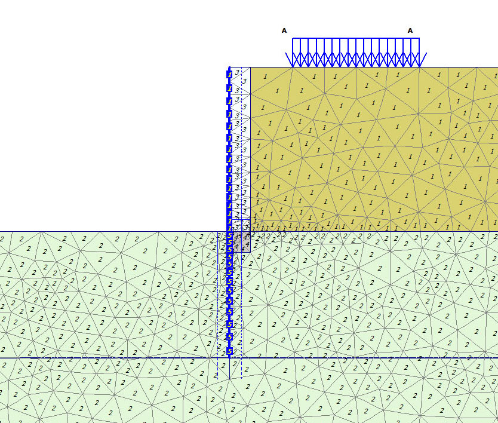

Επιστροφή στα έργα
Έργο · 2025
Αντιστήριξη παλαιού πετρόχτιστου τοίχου
Γεωτεχνική και στατική μελέτη αντιστήριξης παλαιού τοίχου με σημάδια μεγάλης παραμόρφωσης, κατά τη διάρκεια έργων οδοποιίας έμπροσθεν.
Πλαίσιο & πρόκληση
Πλαίσιο & πρόκληση
Παλαιός πετρόχτιστος τοίχος αντιστήριξης παρουσίαζε σημάδια μεγάλης παραμόρφωσης. Κατά τη διάρκεια εργασιών οδοποιίας έμπροσθεν του τοίχου υπήρχε αυξημένος κίνδυνος κατάρρευσης, σε ένα ιδιαίτερα ευαίσθητο περιβάλλον ανάντη.
Η μελέτη εκπονήθηκε για την κατασκευαστική εταιρεία σε πολύ σύντομο χρονικό διάστημα, παράλληλα με την υλοποίηση της εργολαβίας. Η κατασκευή ξεκίνησε άμεσα μετά την παράδοση της μελέτης, χωρίς διακοπή των εργασιών οδοποιίας.
Φωτογραφικό υλικό & ανάλυση
Φωτογραφικό υλικό & ανάλυση


